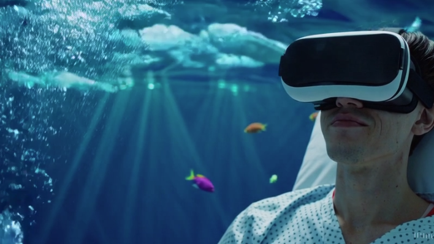
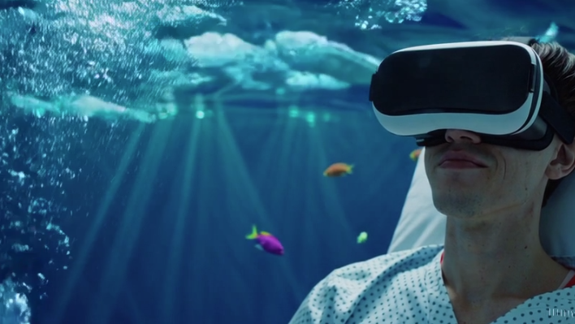

Calle Segre, nº 125, 08030 Barcelona
Metro
Onze de Setembre (L10 i L9)
3 minutos caminando
Fabra i Puig (L1)
10 minutos caminando

Cercanias
Fabra i Puig
10 minutos caminando
Sant Andreu Arenal
10 minutos caminando
Endinsa’t nace de una idea muy clara: las experiencias inmersivas no tienen por qué llevarte lejos, pueden llegar hasta ti.
Todo empezó al ver personas aisladas — en residencias, hospitales, orfanatos o centros de menores — y pensar que valía la pena ofrecerles una realidad diferente capaz de hacerles sentir felices.
Con el tiempo, hemos querido ir más allá: llevamos las experiencias inmersivas a cualquier lugar, con finalidades educativas, lúdicas o emocionales, siempre adaptadas a cada persona y situación.
Onze de Setembre (L10 i L9)
3 minutos caminando
Fabra i Puig (L1)
10 minutos caminando
Fabra i Puig
10 minutos caminando
Sant Andreu Arenal
10 minutos caminando
En Endinsa’t no nos olvidamos de las personas que están viviendo procesos difíciles en los hospitales. Nuestro objetivo es poner la tecnología inmersiva al servicio de su bienestar y transportarlas, aunque sea por un momento, a entornos más amables y confortables que los del hospital.
Por eso ofrecemos:

En Endinsa’t queremos acompañar también a las personas mayores en su día a día, especialmente a aquellas que viven en residencias o centros de día. Las experiencias inmersivas pueden romper la rutina, despertar recuerdos y generar momentos de conexión emocional con su entorno y con las familias.
Por eso ofrecemos:
En Endinsa’t creemos en el poder de las experiencias inmersivas como herramienta de transformación personal y social. En los centros penitenciarios, la realidad virtual puede ofrecer espacios seguros para el aprendizaje, la reflexión y el desarrollo de habilidades, contribuyendo a los procesos de reinserción y bienestar emocional.
Por eso ofrecemos:
Proyecto de experiencias inmersivas diseñado para acompañar a pacientes del Hospital del Mar, con el objetivo de reducir la ansiedad y mejorar el bienestar emocional.
Mediante la realidad virtual, se crean entornos calmados y seguros que permiten desconectar temporalmente del entorno hospitalario.
 

Proyecto pensado para llevar experiencias de realidad virtual al aula de Monlau Motul Technical School con actividades educativas y lúdicas adaptadas a diferentes edades.
El objetivo es aprender desde la experiencia, reforzar contenidos curriculares y fomentar la motivación del alumnado.


Proyecto orientado a personas mayores para estimular la memoria y la conexión emocional mediante experiencias inmersivas seguras y adaptadas.
A través de paseos virtuales, entornos familiares y actividades suaves, se promueve el bienestar, la conversación y el vínculo con familiares y profesionales.